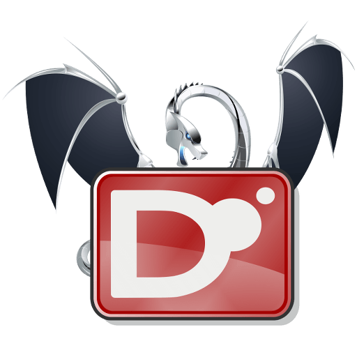

Скачать

DMD
- Официальный референсный компилятор, разрабатываемый Уолтером Брайтом.
- Наиболее полно реализует стандарт языка.
- Простая установка.
- Высокая скорость компиляции.
Платформы: Windows, Linux, OS X, FreeBSD.

LDC
- Фронтэнд для LLVM.
- Генерирует хорошо оптимизированный код.
- Поддерживает множество платформ и архитектур.
Платформы: Windows, Linux, OS X, FreeBSD, OpenSolaris, iOS (alpha), Android.